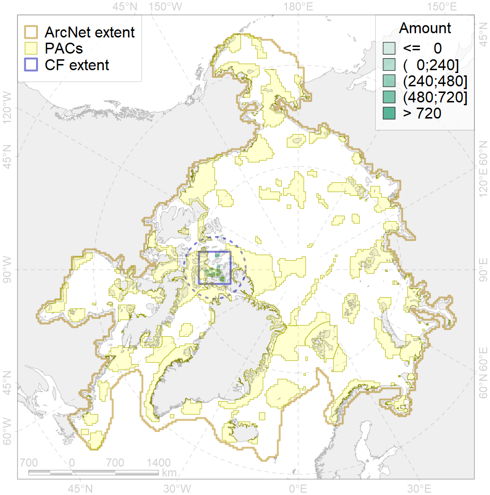
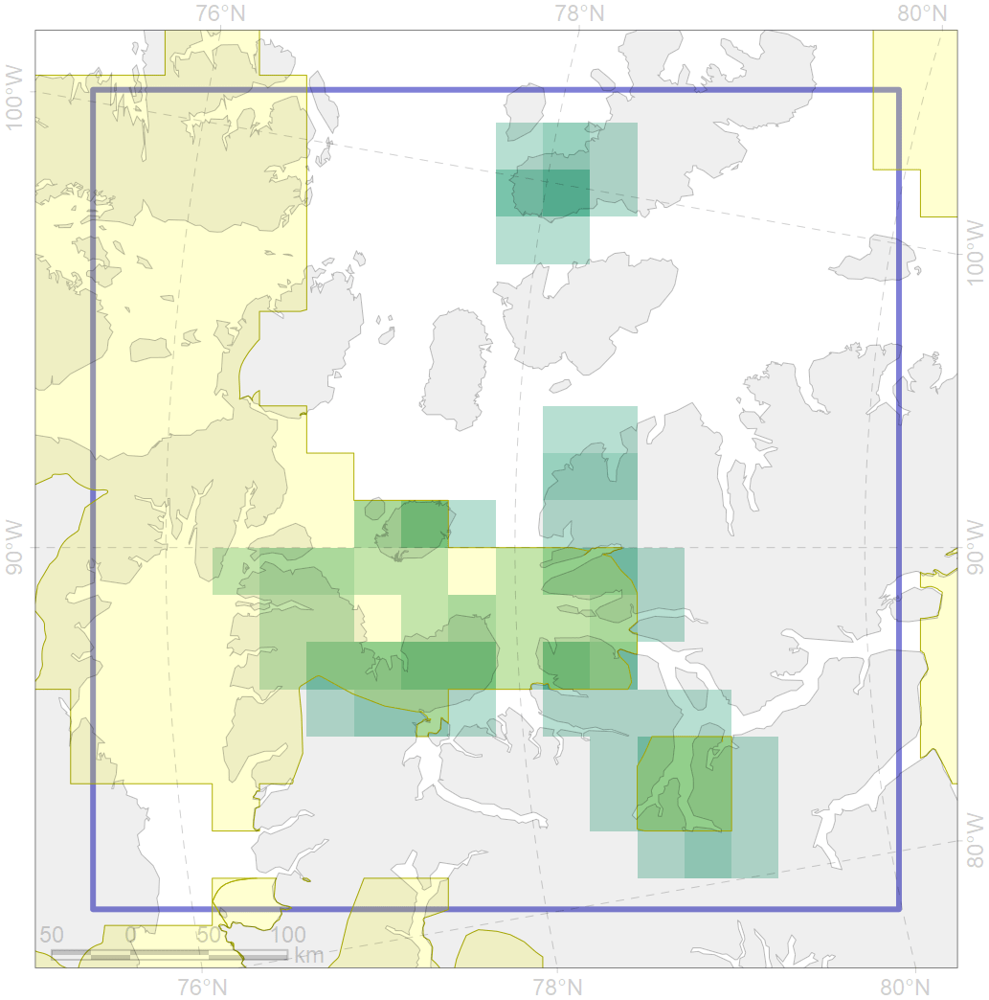

9033

| CF ID | 9033 |
| CF Name | polar bear denning areas of NW (Norwegian Bay) subpopulation |
| Time Period | prior to 2018 |
| Source(s) | WWF Interim Report - Polar Bear Denning – 2018 |
| Seasonality | October - April |
| Depth Horizon | 0 |
| Methodology | Field data, expert opinion, simulation results. |
| Author Name | Evgeniya Melikhova, Stanislav Belikov |
| Notes | |
| Conservation Target Set in the Scenario | 0.648 |
| Conservation Target Achieved in the Scenario | 0.654 (Scenario: 101.0%) |
| PAC ID | Proportion in the PAC | Contribution to ArcNet Target Achievement | PAC’s Contribution to the Achieved Target |
|---|---|---|---|
| 52 | 58.9% | 79.9% | 79.2% |
| 53 | 15.1% | 16.1% | 15.9% |
| inner | 74.0% | 96.0% | 95.1% |
| outer | 26.0% | 5.0% | 4.9% |